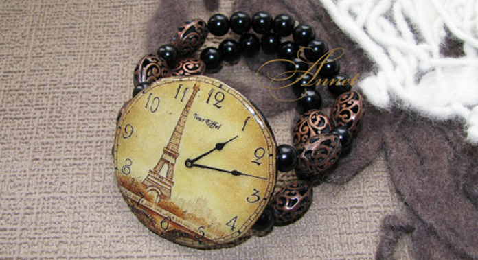

Заголовок Н1 Новая коллекция ручных часов
Наручные женские часы не только необходимость знания времени, но и элемент имиджа, предмет гордости, и украшение! Для женщин стало престижно иметь не одни часы, а несколько. Они ведь, несомненно, должны сочетаться с Вашим нарядом. Сплошная элегантность и роскошь, браслет и корпус инкрустированы стразами, застежка простая.
Они ведь, несомненно, должны сочетаться с Вашим нарядом. Сплошная элегантность и роскошь, браслет и корпус инкрустированы стразами, застежка простая.
Заголовок Н3
Наручные женские часы не только необходимость знания времени, но и элемент имиджа, предмет гордости, и украшение! Для женщин стало престижно иметь не одни часы, а несколько. Они ведь, несомненно, должны сочетаться с Вашим нарядом. Сплошная элегантность и роскошь, браслет и корпус инкрустированы стразами, застежка простая.
| Время | Тестовое название | Название 1 | Название 2 | |
|---|---|---|---|---|
| 9:40 | Тестовое название 1 | колличество 1 | стоимость 1 | тестовая ссылка |
| 11:20 | Тестовое название 2 | колличество 2 | стоимость 2 | тестовая ссылка |
| 9:40 | Тестовое название 3 | колличество 3 | стоимость 3 | тестовая ссылка |
Табы
- Активный таб
- Неактивный таб
-
Тестовый текст в первом табе. Наручные женские часы не только необходимость знания времени, но и элемент имиджа, предмет гордости, и украшение! Для женщин стало престижно иметь не одни часы, а несколько. Они ведь, несомненно, должны сочетаться с Вашим нарядом. Сплошная элегантность и роскошь, браслет, корпус инкрустированы стразами, застежка простая.
-
Для женщин стало престижно иметь не одни часы, а несколько. Они ведь, несомненно, должны сочетаться с Вашим нарядом. Сплошная элегантность и роскошь, браслет, корпус инкрустированы стразами, застежка простая.